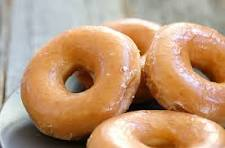

Glazed Doughnuts

Description
This is a recipe for doughnuts. Doughnuts taste good.
I like eating doughnuts. Everyone loves doughnuts.
These doughnuts probably aren't as good as Krispy Kreme
doughnuts but they are probably better than Dunkin Donuts
(I've never made them before so I don't really know).
First you make the dough and then you make it into a
doughnut shape and then you fry it.
Ingredients
For the doughnuts:
- 4 and 1/4 cups flour
- 2 eggs
- 1/4 cup granulated sugar
- 1 and 1/4 cups milk
- 2 and 1/4 teaspoons active dry yeast
- 8 tablespoons (1 stick) butter, melted & cooled
- 1 teaspoon salt
- 2 quarts neutral oil
For the glaze:
- 2 cups powdered sugar
- 1/4 cup milk
Steps
- Heat the milk until it is warm but not hot, about 90 degrees. In a large bowl, combine it with the yeast. Stir lightly, and let sit until the mixture is foamy, about 5 minutes.
- Using an electric mixer or a stand mixer fitted with a dough hook, beat the eggs, butter, sugar and salt into the yeast mixture. Add half of the flour (2 cups plus 2 tablespoons), and mix until combined, then mix in the rest of the flour until the dough pulls away from the sides of the bowl. Add more flour, about 2 tablespoons at a time, if the dough is too wet. If you're using an electric mixer, the dough will probably become too thick to beat; when it does, transfer it to a floured surface, and gently knead it until smooth. Grease a large bowl with a little oil. Transfer the dough to the bowl, and cover. Let rise at room temperature until it doubles in size, about 1 hour.
- Turn the dough out onto a well-floured surface, and roll it to ½-inch thickness. Cut out the doughnuts with a doughnut cutter, concentric cookie cutters or a drinking glass and a shot glass (the larger one should be about 3 inches in diameter), flouring the cutters as you go. Reserve the doughnut holes. If you're making filled doughnuts, don't cut out the middle. Knead any scraps together, being careful not to overwork, and let rest for a few minutes before repeating the process.
- Put the doughnuts on two floured baking sheets so that there is plenty of room between each one. Cover with a kitchen towel, and let rise in a warm place until they are slightly puffed up and delicate, about 45 minutes. If your kitchen isn't warm, heat the oven to 200 at the beginning of this step, then turn off the heat, put the baking sheets in the oven and leave the door ajar.
- About 15 minutes before the doughnuts are done rising, put the oil in a heavy-bottomed pot or Dutch oven over medium heat, and heat it to 375. Meanwhile, line cooling racks, baking sheets or plates with paper towels.
- Carefully add the doughnuts to the oil, a few at a time. If they're too delicate to pick up with your fingers (they may be this way only if you rose them in the oven), use a metal spatula to pick them up and slide them into the oil. It's O.K. if they deflate a bit; they'll puff back up as they fry. When the bottoms are deep golden, after 45 seconds to a minute, use a slotted spoon to flip; cook until they're deep golden all over. Doughnut holes cook faster. Transfer the doughnuts to the prepared plates or racks, and repeat with the rest of the dough, adjusting the heat as needed to keep the oil at 375. Glaze or fill as follows, and serve as soon as possible.
- Whisk together 2 cups powdered sugar, ¼ cup milk and 1 teaspoon vanilla until smooth. When the doughnuts are cool enough to handle, dip into the glaze; if you like, flip them so the tops they're completely covered. Put on racks to let the glaze harden.
Recipe from New York Times Cooking. Used only for practice making a website.
Homepage